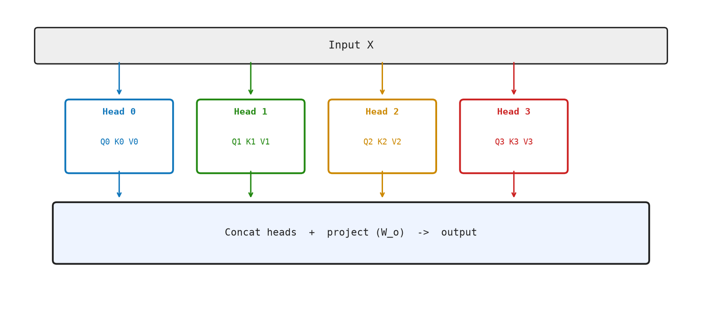

8 Multi-Head Attention — Many Conversations at Once
A single attention head is expressive, but limited. It produces one set of attention weights — one pattern of “who attends to whom.” In natural language, multiple distinct relationships coexist in the same sentence. Consider:
"The animal didn't cross the street because it was too tired."- One pattern might link “it” → “animal” (coreference)
- Another might link “cross” → “street” (verb-object)
- Another might track the causal structure “because”
Multi-head attention runs H independent attention heads in parallel, each free to specialize on a different relationship type. Their outputs are concatenated and projected back to the model dimension.
8.1 The Idea
A single attention operation produces one pattern of “who attends to whom.” But a sentence carries many different kinds of relationships at the same time.
In “The animal didn’t cross the street because it was too tired”:
- it refers back to animal — that is a coreference relationship.
- cross links to street — that is a verb-object relationship.
- because connects a cause to an effect — that is a logical relationship.
One attention head can only focus on one of these at a time. Multi-head attention runs several independent attention operations in parallel — each one free to specialize on a different pattern. Each head sees the same input but learns to ask a different question of it.
At the end, the results from all heads are stitched back together and projected into a single vector, the same size as before. The model learns entirely from data which head should track grammar, which should track meaning, which should track proximity — no one programs this in explicitly.
The result is a richer representation than any single head could produce: each token’s final vector carries signals from multiple independent attention patterns at once.
8.2 The Math
Step 1 — Compute each head independently.
Each head \(h \in \{1, \ldots, H\}\) projects the input into its own query, key, and value spaces, then runs a standard attention:
\[ \begin{aligned} Q^{h} &= X W_q^{h} \in \mathbb{R}^{T\times d_k} \\ K^{h} &= X W_k^{h} \in \mathbb{R}^{T\times d_k} \\ V^{h} &= X W_v^{h} \in \mathbb{R}^{T\times d_v} \\ \text{head}^{h} &= \operatorname{softmax}\!\left(\frac{Q^{h}{K^{h}}^{\top}}{\sqrt{d_k}} + M\right) V^{h} \end{aligned} \]
Step 2 — Concatenate.
The \(H\) outputs are placed side by side:
\[ \operatorname{MultiHead} = \operatorname{concat}(\text{head}^1, \text{head}^2, \ldots, \text{head}^{H}) \in \mathbb{R}^{T \times (H\cdot d_v)} \]
Because \(d_v = d/H\), the result has shape \([T \times d]\) — the same as the input.
Step 3 — Output projection.
A learned matrix \(W_o \in \mathbb{R}^{d\times d}\) mixes information across heads:
\[ \text{Output} = \operatorname{MultiHead} \cdot W_o \in \mathbb{R}^{T\times d} \]
Putting it all together:
\[ \text{MHA}(X) = [\text{head}^1 \| \text{head}^2 \| \ldots \| \text{head}^{H}]\, W_o \]
where \(\text{head}^{h} = \operatorname{Attention}(X W_q^{h}, X W_k^{h}, X W_v^{h})\).
8.3 The Matrix: Worked Example
Let T = 3, d = 4, H = 2 heads, so \(d_k = d_v = 2\).
Input:
X = [[1, 0, 1, 0],
[0, 1, 0, 1],
[1, 1, 0, 0]] (3×4)Head 1 uses the first 2 dimensions primarily.
Wq¹ = Wk¹ = Wv¹ = [[1,0],[0,1],[0,0],[0,0]] (4×2)
Q¹ = X Wq¹ = [[1,0],[0,1],[1,1]] (3×2)Scores: \(S^1 = Q^1{K^1}^{\top} / \sqrt{2}\):
Q¹K¹ᵀ = [[1,0,1],[0,1,1],[1,1,2]]
S¹ = [[0.71, 0.00, 0.71],
[0.00, 0.71, 0.71],
[0.71, 0.71, 1.41]]After causal mask and softmax:
A¹ = [[1.000, 0.000, 0.000],
[0.414, 0.586, 0.000],
[0.221, 0.221, 0.558]]
head¹ = A¹ V¹ = [[1.000, 0.000],
[0.586, 0.414],
[0.779, 0.779]] (3×2)Head 2 focuses on last 2 dimensions, producing similarly shaped output. After concatenating both heads and applying the output projection \(W_o \in \mathbb{R}^{4\times 4}\):
MultiHead = [head¹ ‖ head²] =
[[1.000, 0.000, 1.000, 0.000],
[0.586, 0.414, 0.500, 0.500],
[0.779, 0.779, 0.421, 0.211]] (3×4)Figure Figure 8.1 shows parallel attention heads whose outputs are concatenated and projected back to model width.

8.4 The Code: Multi-Head Attention in Python
@dataclass
class AttentionHead:
wq: Matrix
wk: Matrix
wv: Matrix
@dataclass
class MultiHeadAttention:
heads: list[AttentionHead]
wo: Matrix
def make_multi_head_attention(d_model: int, num_heads: int, rng: random.Random) -> MultiHeadAttention:
if d_model % num_heads != 0:
raise ValueError("d_model must be divisible by num_heads")
d_key = d_model // num_heads
heads = [
AttentionHead(
random_matrix(d_model, d_key, rng),
random_matrix(d_model, d_key, rng),
random_matrix(d_model, d_key, rng),
)
for _ in range(num_heads)
]
return MultiHeadAttention(heads=heads, wo=random_matrix(d_model, d_model, rng))Each attention head is a triple of weight matrices \((W_q, W_k, W_v)\), each of shape \([d \times d_k]\). MultiHeadAttention groups the heads with the output projection \(W_o\). make_multi_head_attention checks that the model width can be split evenly, allocates one parameter set per head, and creates the final output projection.
def multi_head_attention(x: Matrix, params: MultiHeadAttention) -> tuple[Matrix, list[Matrix]]:
results = [
self_attention(x, head.wq, head.wk, head.wv)
for head in params.heads
]
concatenated = hstack([output for output, _weights in results])
return matrix_multiply(concatenated, params.wo), [weights for _output, weights in results]multi_head_attention runs each head’s SDPA independently, concatenates the per-head outputs column-wise, and applies the output projection.
def chapter_08(seed: int = 7) -> dict[str, object]:
rng = random.Random(seed)
x = random_matrix(4, 8, rng)
params = make_multi_head_attention(8, 2, rng)
output, weights = multi_head_attention(x, params)
return {
"output_shape": (len(output), len(output[0])),
"num_heads": len(weights),
}The demo creates a two-head attention module, runs it over a four-token sequence, and reports the output shape plus the number of attention-weight matrices. Run it with python3 src/python/chapter_demos.py.
8.5 Why Multi-Head Attention Works
Each head learns to specialize. Research has identified heads that:
- Track syntactic structure (subject-verb agreement)
- Resolve coreference (“it” → “the cat”)
- Handle positional offsets (“look 2 tokens back”)
- Track rare-word semantics
These specializations emerge from training, not from explicit design.
Math Minute — Expressivity
H heads of dimension d/H can represent attention patterns that a single head of dimension d cannot easily learn. This is analogous to having H different “lenses” looking at the same sequence; each lens focuses on different features. The output projection Wo then combines the views.
8.6 Key Takeaways
- Multi-head attention runs
Hattention heads in parallel, each in a lower-dimensional subspace \(d_k = d/H\). - Each head has independent \(W_q, W_k, W_v\) matrices — each learns a different “question to ask.”
- Outputs are concatenated (not averaged), then projected back to
dwith \(W_o\). - The total parameter count is \(3Hd\cdot d_k + d^2 = 3d^2 + d^2\) — same as one large head.
- Different heads specialize in different linguistic relationships.
What’s next? After attention mixes information across tokens, each token’s vector goes through a small feed-forward network — a two-layer MLP applied identically to every position. This is where most of the model’s stored “knowledge” lives. See Chapter 9.